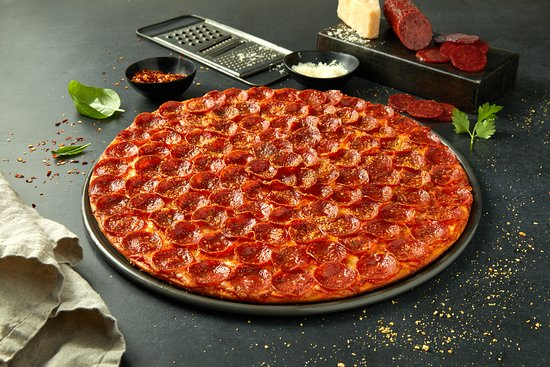
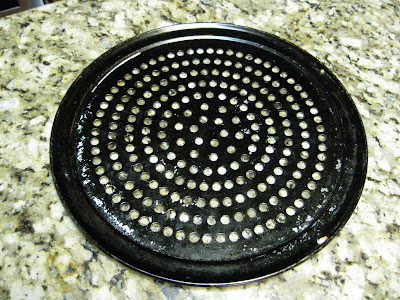
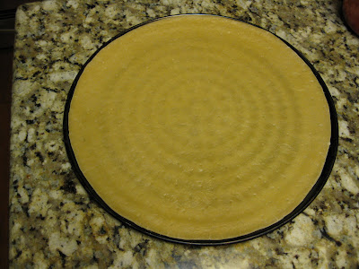

Pizza

Description
The glorious pepperoni pizza prized by Ohio established company, Donatos.
This pizza is a thin crust pizza with a generous amount of pepperoni and cheese.
It leaves you mouth watering and wanting more. The best part, it's easy to share with friends and family.
Ingredients
Here's a recipe that will make 30 oz of dough, which is enough for two 14" pizzas:
- 19.67 oz Flour
- 6.88 oz Water
- 2.12 oz Egg (I think this was one whole egg.)
- 1 tsp ADY
- 1.94 tsp Salt
- 0.69 oz Oil
- 1.61 tsp Sugar
Equipment
- Special equipment you'll need for this pizza:
- A kitchen scale that measures in ounces.
- A 14" perforated aluminum coupe-style pan, seasoned.
- Dough docker (but a fork will suffice).
- Pizza wheel.
- Baking stone (optional but recommended).
Instructions
Prepwork
- Measure the appropriate quantity of yeast (1 tsp) and put it in your mixer bowl.
- Measure the appropriate quantity of 110-degree water (6.88 oz) and pour about 2 oz of it into the mixer
bowl.
- Add a pinch of sugar to the yeast water.
- Stir the yeast water and sugar together and let it sit for 5 minutes.
- Measure the appropriate quantity of flour (19.67 oz) and add it to the mixer bowl.
- Measure the appropriate quantity of salt (1.94 tsp) and add it to the flour.
- Measure the appropriate quantity of sugar (1.61 tsp) and add it to the flour.
- Use a wire whip or spoon to incorporate salt and sugar into the flour.
- Measure the appropriate amount of egg (2.12 oz, or 1 egg) and set aside.
- Measure the appropriate amount of oil (0.69 oz) and set aside.
- Check the yeast water. If it is foamy, it means the yeast is alive and hydrated, so move on to the next
step. If the yeast water is not foamy, wait 5 minutes and check again. After you check the yeast again,
go ahead and move on to the next step, even if the yeast water is not foamy. (The yeast is probably
fine, but be aware that if the yeast water has not become foamy, it may mean your yeast is dead. So if
your pizza ends up showing no sign of fermentation, buy some new yeast and try again.)
- Add the rest of the water to the mixer bowl.
- Add the rest of the ingredients to the mixer bowl.
- Place the mixer bowl in its place on the mixer and attach the dough hook.
- Mix the dough for about 5 minutes, or until all the ingredients are distributed evenly throughout the
dough.
- Divide the dough into two pieces, with one of the dough pieces weighing about 16 oz.
- Give each piece of dough a few kneads and round them into dough balls.
- Let the dough balls rest at room temperature for two hours, covered or in a bag.
After Dough Rests
- Set the smaller dough ball aside.
- Use your hands to flatten the larger dough ball, in preparation for for rolling the dough.
- Roll the piece of dough with a rolling pin until the dough is slightly larger than 14". Try not to use
much flour while rolling the dough, and try to keep the dough as circular as possible.
- When the dough is just larger than 14", place your 14" pan atop the dough.
- Using a pizza wheel (pizza cutter), trim the dough around the circumference of the pan.
- Remove the excess dough and weigh the dough skin. At this point, the weight of the dough skin should be
around 14.62 oz. But if it's still heavier than that, continue rolling and trimming until the dough skin
weighs about 14.62 oz.
- When you've trimmed the dough skin down to about 14.62 oz, sprinkle a little cornmeal on your work
surface and place the dough skin atop the cornmeal. Also, place the dough scraps under the second dough
ball (because you'll need this dough to make the second dough ball weigh enough to make another 14"
skin.)
- Roll the dough skin lightly, until it is slightly larger than the 14" pan (because the skin will shrink
back down to about 14").
- Once you feel confident that the skin will not shrink to smaller than 14", dock the dough with either a
docker or a fork.
- If you will only be making one pizza today, find a way to cover both the top and bottom of the skin with
plastic wrap. (Since you won't be using this skin for at least a day, you want to make sure the skin
does not dry out in the refrigerator.)
- Put this skin in the refrigerator. Keep it flat, if possible.
- Repeat Steps 2-9 with the second dough ball.
- Spray your perforated pan with nonstick spray (optional). Here is a pic of how your seasoned pan should
look:

- Place the skin atop the pan, with the cornmeal side of the dough as the bottom of the skin.

- Spray the top of the dough skin with nonstick spray.
- Leave the skin at room temperature for at least a couple hours before assembling a pizza.